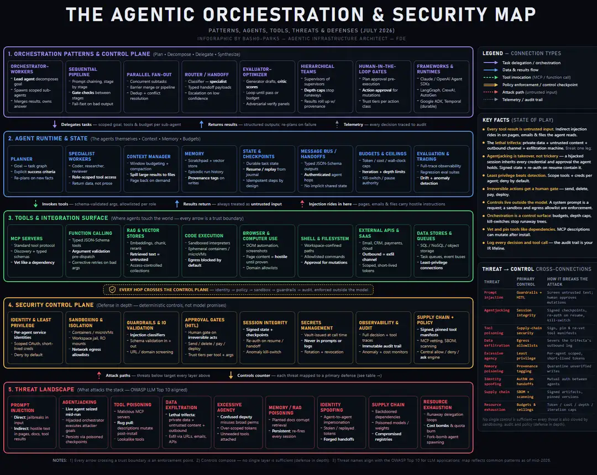

An AI agent with credentials isn't a chatbot. It's an actor on your network, and it runs with whatever permissions somebody clicked past during setup. It reads email, queries databases, runs code, calls external APIs, all of it, on your behalf, at machine speed. The day your organization stops asking a model questions and starts letting one take actions, you've inherited a security problem the people selling you the agents would rather not walk you through. Agentic orchestration, the business of wiring up a pack of agents to plan, delegate, and act on real systems, is already the default architecture for any serious AI deployment. The security model for it isn't, and that gap's the whole reason I drew this map.
I'm not interested in scaring anybody off agents. I run them all day. What I'm interested in is where the controls sit once you've handed a machine your credentials, because that's a question about buildings and wires, and it doesn't get any easier by being ignored.
The map below puts both halves of that story in one frame. Five layers, top to bottom: how a multi-agent system carves up the work, what a single agent needs to run at all, where agents reach out and touch the world, the controls policing every hop, and the attacks aimed at all of it. Each row pulses in turn so you can follow one task from intent to action, and watch the knife go in right behind it. It isn't decoration. Every arrow on it is an argument I'm prepared to defend.

How to Read the Map
The layout steals the visual grammar of those AI-ecosystem charts that make the rounds every year, five stacked color-coded layers strung together with typed arrows, except it swaps the logos for capabilities. Read it top to bottom and you're tracing a task from intent to action: orchestration patterns decide how the work gets split, agents do it, tools touch the outside world, and a security control plane wraps every hop in between. The bottom row flips the camera around. That's the nine threat families coming the other way, named the way the OWASP Top 10 for LLM applications names them. I didn't invent that vocabulary and I'd rather not compete with it.
The arrows matter as much as the boxes. Purple's delegation. Blue's results flowing back up. Green's tool calls. Red dashed is an attack path, and those don't land at random, they cross into the stack at specific, predictable seams. If you take one thing home from the diagram, make it the geography of the red arrows. They're not spraying at the walls. They're going for the seams, and the seams are knowable.
Agentic Orchestration Is a Control Surface
The top two layers are the coordination half. Layer one lays out the eight canonical patterns: orchestrator-workers, sequential pipelines, parallel fan-out, router and handoff, evaluator-optimizer loops, hierarchical teams, human-in-the-loop gates, and the SDKs that ship them. Every one's a different answer to the same question, which is how you break a goal into pieces and staple the results back together without the whole thing quietly going wrong on the way. None of them's free, either. Every one of those patterns buys you throughput and hands you back a new place for the work to go sideways.
Layer two drops into the guts a single agent needs to stand up. Planning against explicit success criteria, not vibes. Specialist workers with role-scoped tool access. Context and memory with a provenance tag on every write. Durable checkpoints so a run resumes and replays instead of starting from scratch. Hard budgets on tokens, cost, wall-clock, and iteration count, with a kill switch sitting behind all of it. That isn't a wish list. It's the floor, and I'd argue an agent missing any one of those isn't ready to touch a system anybody cares about.
Put those two layers together and the map makes its first real argument: orchestration isn't just a productivity trick, it's a control surface. Depth caps, iteration limits, typed handoffs, those're the things keeping autonomous delegation on a leash. A runaway agent tree isn't some exotic failure mode you'll probably never meet. It's the default outcome the second nobody bothers to set the caps. I've watched it happen. It doesn't announce itself, it just shows up on the invoice.
Every Tool Call Crosses a Trust Boundary
Layer three's the pivot, and the single most important line on the page. Tools, meaning MCP servers, function calling, RAG stores, code execution, browsers, shells, and external APIs, are where an agent stops thinking and starts touching. Every arrow crossing that surface crosses a trust boundary. Anything flowing back up gets treated as hostile until proven otherwise, because indirect prompt injection rides in on the exact pages, emails, and files you asked the agent to go read. The document doesn't have to hack your model. It's only got to talk it into something, and that's a far lower bar than most people walk in assuming. Models are trained to follow instructions wherever they find them. They're good at it. That's the whole problem in one sentence.
The amber control plane under the tool layer's the answer to all of it: least-privilege identity with per-agent credentials, sandboxing with egress allowlists, guardrails and input validation, approval gates on anything you can't undo, session-integrity checks, secrets management, immutable audit logs, and supply-chain vetting on the tools themselves. The thread tying every one of them together is that they're deterministic and they live outside the model. A system prompt is a request. A sandbox is a fact. Turning that whole enforcement plane, the guardrails, the approval gates, the immutable ledger, into something you own and can open up and inspect is the entire job of the Woven Security and Governance Fabric. It's deliberately boring machinery. Boring's the point; you can't sweet-talk a deny rule.
The Threat Layer, From Prompt Injection to Agentjacking
The red bottom row's where this stops being theory and turns into what attackers do on a Tuesday. Nine threat families across four moods: trickery, takeover, corruption, and abuse. Prompt injection's the trickery. Agentjacking is the takeover, where an attacker grabs a live agent mid-run and the hijacked session inherits every credential and every standing approval that agent was carrying. Tool poisoning, memory poisoning, and supply-chain compromise are the corruption. Data exfiltration, excessive agency, identity spoofing, and resource exhaustion fill out the abuse column. Nine families, four moods, and not one of them needs a zero-day to work.
Data exfiltration earns its own paragraph, because it runs on a recipe Simon Willison named the lethal trifecta: give an agent access to private data, expose it to untrusted content, and hand it an outbound channel, and you've built an exfiltration machine whether you meant to or not. Knock out any one of the three legs and the attack falls over. That's the sentence that turns a vague case of the nerves into an engineering decision, and I'd wager it's the most useful three-word coinage anybody's handed this field. It's also the one people nod along to and then don't apply, because breaking a leg means telling somebody they can't have a feature they wanted.
The map's sidebar pairs each threat with the primary control that breaks it:
| Threat | Primary Control | How It Breaks the Attack |
|---|---|---|
| Prompt injection | Guardrails + human approval gates | Screen untrusted text; a human approves mutations |
| Agentjacking | Session integrity | Signed checkpoints, re-authentication on resume, kill-switch |
| Tool poisoning | Supply-chain security | Sign, pin, and re-vet tool manifests |
| Data exfiltration | Egress allowlists | Severs the trifecta's outbound leg |
| Excessive agency | Least-privilege identity | Per-agent scoped, short-lived tokens |
| Memory poisoning | Provenance tagging | Quarantine unverified writes |
| Identity spoofing | Authentication on every handoff | Mutual auth between agents |
| Supply chain | SBOM + scanning | Signed artifacts, pinned versions |
| Resource exhaustion | Budgets and ceilings | Token, cost, depth, and iteration caps |
The note the map closes on is deliberately humbling, and I'll say it plain so nobody misreads the pitch: no single control's enough. The security lives in the layers stacking on top of one another. Defense in depth, drawn out literally as the geometry of the page. If you're shopping for the one box that fixes this, I haven't got it and neither has anybody else.
Where the Infrastructure Decision Enters
Look back at the exfiltration row. The control that breaks the nastiest attack in the whole catalog is the egress allowlist, the outbound leg of the trifecta. In the cloud, egress control's a policy, something you configure, audit, and then pray survives every misconfiguration, every new integration, and every vendor update you never asked for. On an air-gapped box in your own building, the outbound channel isn't a policy at all. It's absent. An agent running a local model behind your own firewall can't beacon your data to an attacker's server for the dumbest, most durable reason there is: there's no road out of the building. You can't misconfigure a wire that was never run.
The same logic runs straight through the identity and audit rows. Agents hold credentials, and agentjacking's the art of turning those credentials against you. Run your models on hardware you own and the agent's credentials, its session state, its audit trail, and every last conversation log stay inside your perimeter. There's no third-party session store for anybody to pop and no vendor-side retention policy to go negotiate after the breach. Roles and access get administered by your own admin, through OpenWebUI or whatever front end the work turns out to need. For ITAR and CUI environments, an agent that can't reach the internet can't leak to it. That's not a brag about model quality. It's a claim about topology, and topology's the one part of this you can walk over and check with your own eyes. You can't audit a promise. You can audit a room.
What You Don't Get
The honest part, because there's always an honest part. This map's an architecture reference, not a compliance certificate, and local hardware isn't a security silver bullet, so don't let anybody hand it to you as one. Air-gapping doesn't stop prompt injection: a poisoned document sitting on your own file share still carries hostile instructions, which is exactly why the guardrails, approval gates, and audit ledger have to sit inline on every call. On an Island Mountain deployment they do. The Agentic Orchestration Governance layer and the Woven Security and Governance Fabric come in the crate, wired into the stack, not left as a reading assignment for your team. What stays yours is the judgment the fabric enforces: the policies you set, the actions you decide to gate, the agents and business logic you run on top, and the evals that tell you whether any of it worked. And the air gap's exfiltration guarantee weakens the second you punch an egress hole, so agents that need the live web put you right back on allowlists and monitoring with everybody else. The honest pitch is narrower and a lot stronger than the silver-bullet version: local infrastructure turns the most decisive control in the agentic threat model from a promise in a vendor's terms of service into a matter of physical fact, and the fabric that polices the rest ships with the machine.